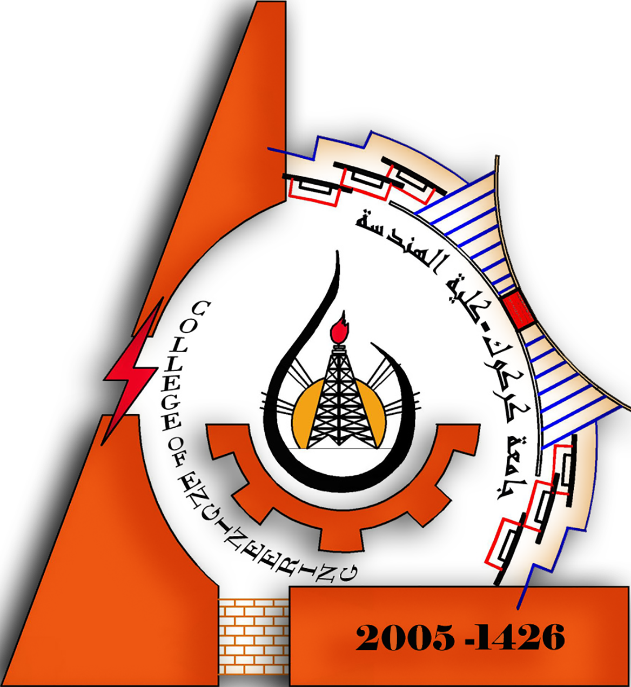

كلية الهندسة - جامعة كركوك
إشراف: م. علي عبد الرحيم محي الدين
الهندسة المدنية
هندسة الكهرباء
هندسة الميكانيك
هندسة النفط
الهندسة الكيميائية
أهلاً بكم
هذا الموقع مخصص لطلبة كلية الهندسة في جامعة كركوك ويحتوي على أقسام وموارد تعليمية لجميع التخصصات.
الهندسة المدنية - Civil Engineering
📘 محاضرات الخرسانة المسلحة (Reinforced Concrete)
📂 ملفات تصميم الأساسات (Foundations Design)
🎥 فيديوهات شرح (YouTube)
هندسة الكهرباء - Electrical Engineering
⚡ محاضرات دوائر كهربائية (Electric Circuits)
📁 مشاريع التحكم والمنطق (Control & Logic)
🎥 كورسات فيديو تعليمية
هندسة الميكانيك - Mechanical Engineering
🔧 ملفات ميكانيكا هندسية (Engineering Mechanics)
📄 مصادر انتقال الحرارة (Heat Transfer)
🎥 شرح عملي على الآلات
هندسة النفط - Petroleum Engineering
🛢️ محاضرات الحفر والإنتاج (Drilling & Production)
📂 مصادر هندسة المكامن (Reservoir Engineering)
🎥 فيديوهات تطبيقية
الهندسة الكيميائية - Chemical Engineering
🧪 محاضرات التفاعلات الكيميائية (Reaction Engineering)
📘 مصادر العمليات الصناعية (Industrial Processes)
🎥 فيديوهات شرح مفصل